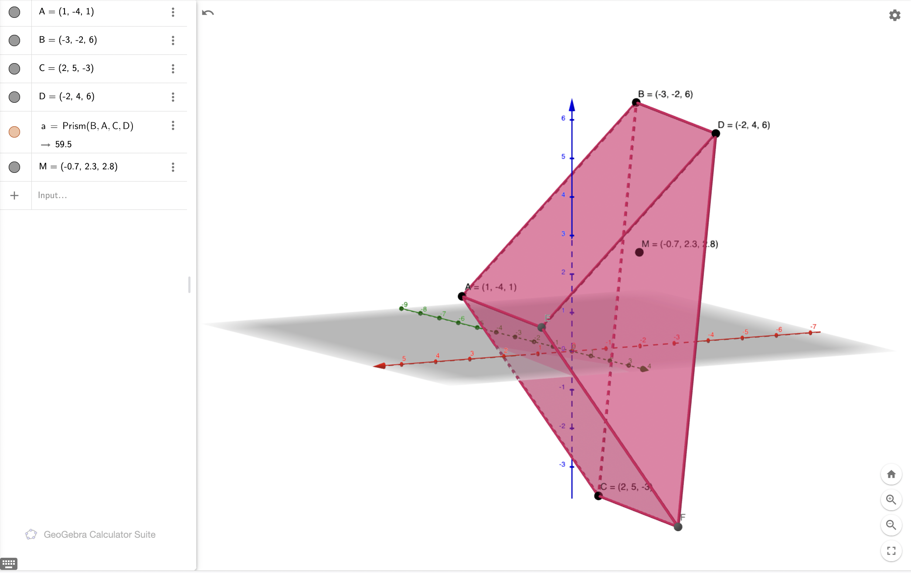

\[\vec{F_g} = - \frac{GM_1M_2}{r^2} \hat{r}\]
where, \(\vec{F_g}\) is the force of gravity on \(M_2\); \(M_1\) and \(M_2\) are two point masses; \(G\) the universal gravitation constant; \(r\) the magnitude of the vector \(\vec{r}\) from \(M_1\) to \(M_2\) and \(\hat{r}\) the unit vector in the \(\vec{r}\) direction.
To begin, we need to modify the Newton’s Universal Gravitation Law to fit the parameters of the scenario. Namely, we need to treat both Earth and our object as point masses, and assign \(M_1\) to be Earth and \(M_2\) to be our object.
Also, it is necessary to define the coordinate system: that our object, \(M_2\), is defined to be to the left/more negative side of the coordinate compared to the location occupied by the Earth, \(M_e=M_1\) (as, per the problem, the "zero" point is set at \(r = \infty\).)
With this assumption, we could therefore claim \(\vec{r}\) to be pointing from the origin to the negative side of the axis, rendering it represented by the value \(-1\) for this system.
Hence, with the necessary variable substitutions as highlighted before, we arrive at the following equation:
\[\vec{F_{em}}(r) = \frac{GM_eM_2}{r^2}\]
The general equation for work is as follows:
\[W = F(x) dx\]
In this case, as we will be deducing the total gravitational potential energy as per the setup above, we need to be integrating upon \(\vec{F_{em}}(r) dr\). Hence, the integral is therefore:
\[W = \int{\frac{GM_eM_2}{r^2} dr}\]
Determining the total gravitation potential energy will therefore involve evaluating the integral:
\[\begin{aligned} W &=& \int{\frac{GM_eM_2}{r^2} dr} \\ W &=& GM_eM_2 \int{\frac{1}{r^2} dr} \\ W &=& GM_eM_2 \int{r^{-2} dr} \\ W &=& \frac{-GM_eM_2}{r}\end{aligned}\]
To deduct the escape velocity of the Earth, our object \(M_2\) must do enough work such that the work Earth exerts upon it — as deducted above — is canceled out.
Hence, to figure the escape velocity, we must deduct the kinetic energy needed to perform the exact work deducted above in the opposite direction. That,
\[-\frac{1}{2}M_2 \vec{V}^2 = \frac{-GM_eM_2}{r}\]
Notably, the negative sign before the kinetic energy equation corresponds to the fact that the work is done in an opposite direction as that done by Earth’s gravitational potential energy.
Also, as the object to escape Earth’s gravitation is starting at the surface of Earth, \(r = R_e\), the radius of the earth.
The final calculations after substitution is therefore simply a matter of isolating \(\vec{V}\), the velocity vector.
\[\begin{aligned} -\frac{1}{2}M_2 \vec{V}^2 &= \frac{-GM_eM_2}{R_e} \\ \vec{V}^2 &= 2\frac{GM_e}{R_e} \\ \vec{V} &= \sqrt{2\frac{GM_e}{R_e}} \end{aligned}\]
Taking \(G = 6.674 \times 10^{-11} m^3 \frac{m^3}{kg\ s^2}\), \(M_e = 5.97 \times 10^{24} kg\), and \(R_e = 6.371 \times 10^6 km\)…
\[|\vec{V}| \approx 1.119 \times 10^4 \frac{m}{s} = 2.503 \times 10^4 \frac{M}{h}\]
The net force of a system is described as:
\[\sum^n_{i=1} \vec{F_{net,i}} = (\sum^n_{i=1} m_i) \ddot{\vec{r_{CM}}}\]
where, \(\vec{F_{net,i}}\) is the net force on \(m_i\), \(\vec{r_{CM}}\) the position vector of the center of mass \(CM\).
In order to isolate \(\vec{r_{CM}}\), the equation above must be integrated twice w.r.t. time, namely:
\[\int \int \sum^n_{i=1} \vec{F_{net,i}} dt dt = \int \int (\sum^n_{i=1} m_i) \ddot{\vec{r_{CM}}} dt dt\]
For this evaluation, we will also set \(\sum^n_{i=1} m_i = M\), define \(\vec{a_i}\) as acceleration of \(m_i\), \(\vec{r_i}\) as position of \(m_i\), and apply Newton’s second law:
\[\begin{aligned} \int \int \sum^n_{i=1} \vec{F_{net,i}} dt dt &= \int \int (\sum^n_{i=1} m_i) \ddot{\vec{r_{CM}}} dt dt \\ \int (\sum^n_{i=1} m_i \int \vec{a_i} dt) dt &= \int (M \int \ddot{\vec{r_{CM}}} dt) dt \\ \int (\sum^n_{i=1} m_i \int \frac{d^2\vec{r_i}}{dt^2} dt) dt &= \int (M \int \frac{d^2\vec{r_{CM}}}{dt^2} dt) dt \\ \int (\sum^n_{i=1} m_i \frac{d\vec{r_i}}{dt}) dt &= \int M \frac{d\vec{r_{CM}}}{dt} dt \\ \sum^n_{i=1} m_i \int \frac{d\vec{r_i}}{dt} dt &= M \int \frac{d\vec{r_{CM}}}{dt} dt \\ \sum^n_{i=1} m_i \vec{r_i} &= M \vec{r_{CM}} \\ \frac{1}{M} \sum^n_{i=1} m_i \vec{r_i} &= \vec{r_{CM}}\end{aligned}\]
As such, the position \(\vec{r_{CM}}\) of the center of mass \(CM\) is therefore:
\[\vec{r_{CM}} = \frac{1}{M} \sum^n_{i=1} m_i \vec{r_i}\]
Where, \(M\) is the total mass of the system, \(m_i\) the mass of component \(i\) of the system, and \(\vec{r_i}\) the position of \(m_i\).
Per the definition of internal force, it does not result in work performed on the system, meaning that the system as a whole would not have moved a distance.
Because of the fact that \(\vec{r_{CM}} = \frac{1}{M} \sum^n_{i=1} m_i \vec{r_i}\) as derived above, \(\vec{r_{CM}}\) changes when the system as a whole moves. However, internal forces does not do this, meaning the existence of internal forces does not change \(\vec{r_{CM}}\).
This fact allows for a simplification of the equation:
\[\sum^n_{i=1} \vec{F_{net,i}} = (\sum^n_{i=1} m_i) \ddot{\vec{r_{CM}}}\]
to:
\[\sum^m_{j=1} \vec{F_{ext,j}} = M \ddot{\vec{r_{CM}}}\]
by applying \(\sum^n_{i=1} m_i = M\) as per aforementioned and the external forces argument above.
For an system with the following points, calculate its center of mass:
| Component Vector | Mass |
|---|---|
| (1,-4,1) | 1kg |
| (-3,-2,6) | 2kg |
| (2,5,-3) | 3kg |
| (-2,4,6) | 4kg |
Applying the expression for the center of mass above, we deduct that the center of mass of this object is located at point \((-0.7, 2.3, 2.8)\).
This center of mass is then plotted visually in an interactive GeoGebra graph. A render of which is shown below:
